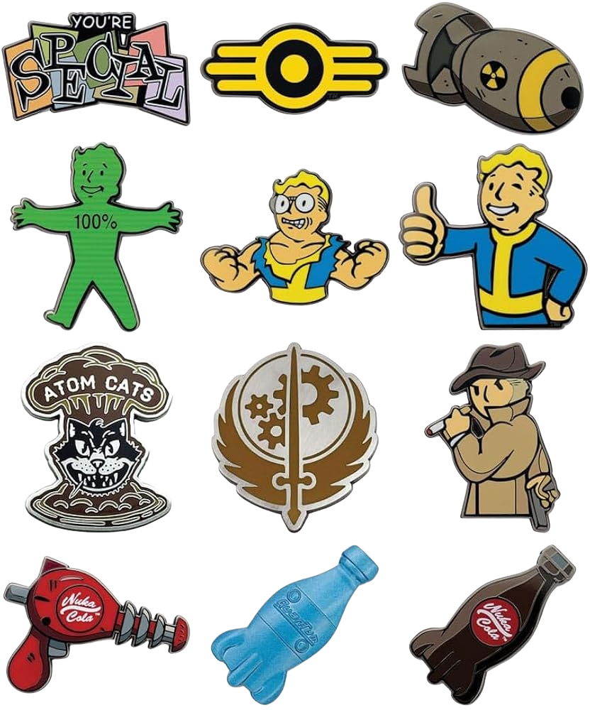
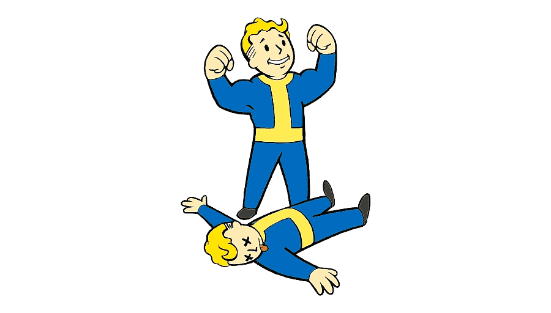

Sistema de Gestión: El programa en Java incluye un inventario dinámico que almacena y valida los objetos que consigues a lo largo de tu aventura.
Pistola chatarra: Arma de fuego inicial equipada con 40 balas, exclusiva de la ruta del Humano al despertar en el búnker de Vault-Tech.
Rifle de palanca: Potente arma de largo alcance equipada con 40 balas, exclusiva de la ruta del Mutante/Necrófago en el yermo.
Estimulante: Objeto consumible médico que restaura +40 Puntos de Vida (PV) al jugador.
Carne de rata-topo: Provision consumible obtenida al inicio por los necrófagos; otorga +5 PV pero incrementa los niveles de radiación.
Mapa: Herramienta de navegación básica sincronizada con el Pip-Boy que se entrega a ambas razas al comienzo de la aventura.
Fusion Core (Núcleo de Fusión): Componente energético clave que se encuentra registrando los contenedores militares (Escena 3) y que sirve para activar la puerta principal del refugio subterráneo.
Gestión de Estadísticas:
Puntos de Vida (PV): 100 PV para Humanos (fuerza intacta) y 85 PV para Necrófagos (con regeneración rápida activada).
Medidor Geiger / Radiación: Control activo del nivel de radiación al adentrarse en zonas peligrosas del Yermo.
Rutas y Accesos Alternativos:
Si no consigues el Fusion Core no podrás abrir ciertas secciones, la exploración te permite buscar cajas de conexiones exteriores y paneles auxiliares (Escenas 4 y 4.1) para encontrar atajos mediante cableado manual.
Minijuego de Hackeo (Terminales de Seguridad):
En la Escena 6, el sistema de seguridad plantea un minijuego de descifrado (estilo Ahorcado) donde debes introducir la contraseña correcta de 5 letras (V__LT) para hackear el sistema y avanzar.
